沿青山島道清里村山坡中的縱橫交錯石牆小巷迷宮路向下走, 因所有分叉路都沒有標示的, 唯有靠感覺來走, 當走出村莊時, 迎面是一條寬闊的馬路, 並不是古街, 知道剛才在某一個分叉路走錯了方向; 再看清楚, 青山小學就在馬路對面, 我們剛才就是經這裡走往11號慢行路道清里村山坡上的始終點的! 算了吧! 只走錯了一小段, 總算完成了青山島11號慢行路這行程, 而青山島所有行程也宣佈全部完滿結束了, 接著是步行返回民宿取行李, 然後乘下午13:00的渡輪往莞島, 再轉乘巴士往海南。看看時間, 只是早上十時三十五分, 時間十分寬裕, 可以慢慢走回民宿。
青山小學
走出道清里村的小巷, 看見青山小學就在馬路對面, 便順道走上去, 進入校園看看。校園的面積很大, 環境很好, 是讀書的理想地方。有幾個學生正在操場玩耍, 互相追逐, 傳來天真無邪的歡笑聲音, 令人羨慕, 又不禁令我想起一些童年斷斷續續的片段。
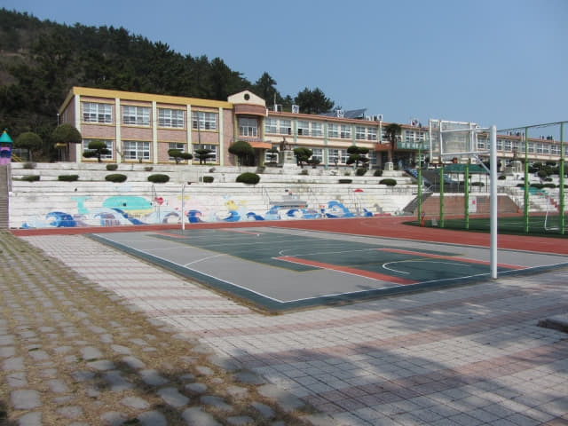
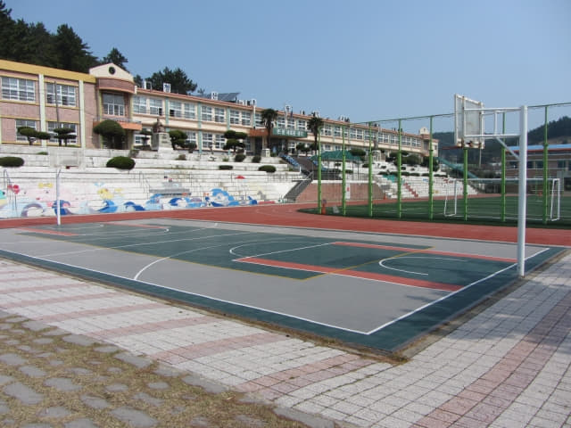
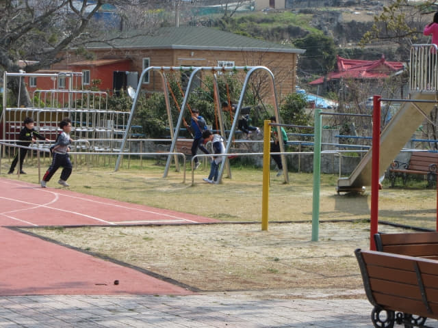
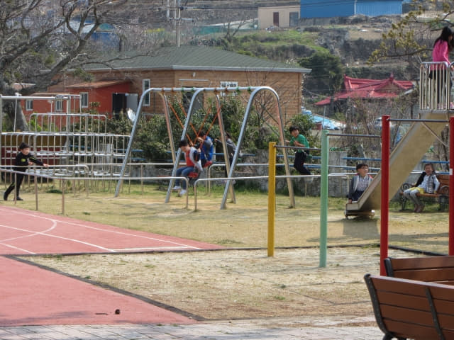
離開青山小學, 返回馬路, 繼續往下走, 剛才已經走過這段路, 印象還很清晰, 現在不用再看地圖也可以走回民宿, 再者, 青山島的道路其實十分簡單。
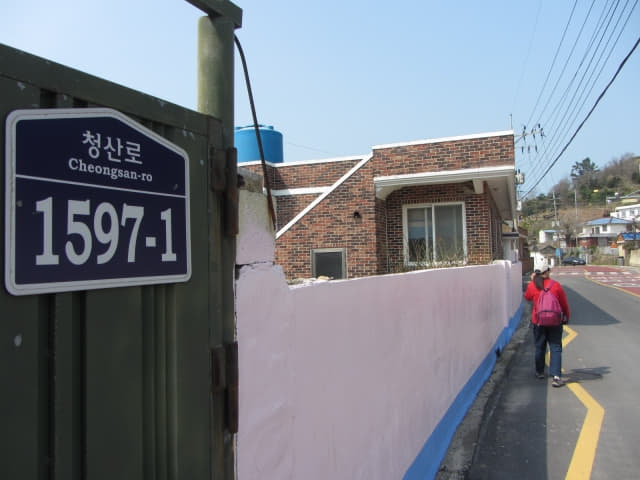
沿途都經過幾個道清里村的出口, 所以走錯路一點也不出奇, 這出口設有一條水喉給人清洗鞋上的泥污, 相信如果走錯這條路, 可能要穿過泥濘的道路或田野。
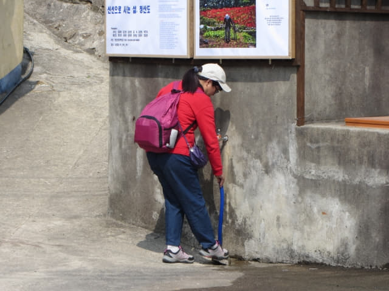
很快便返回沃爾瑪超級市場 (한아름마트), 這是青山島11號慢行路一個很好的地標。
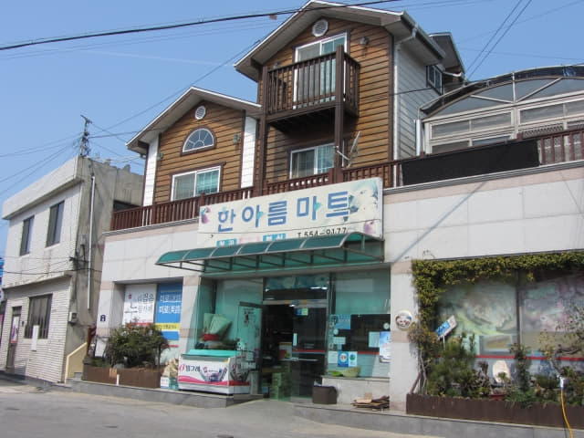
青山島古街小巷
接著轉左沿沃爾瑪超級市場對面的古街小巷走。剛才可愛的汪汪不見了。
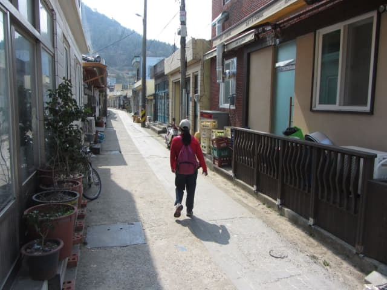
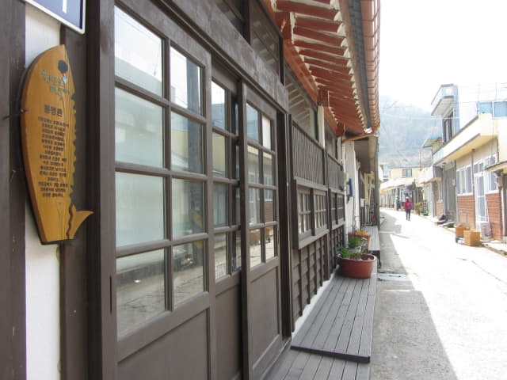
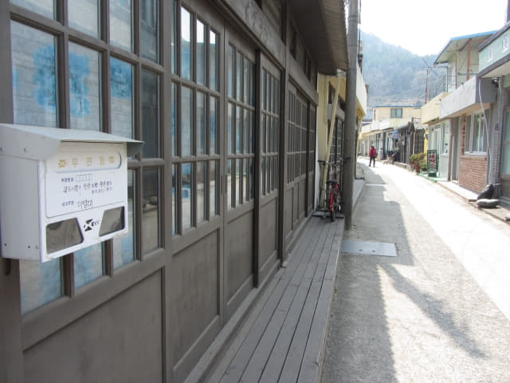
11號慢行路「청산지역아동센터」標示
返回11號慢行路「청산지역아동센터」的標示, 如果剛才在清里村山坡上的縱橫交錯石牆小巷沒有走錯路, 應該是從左邊的小路返回這裡的!
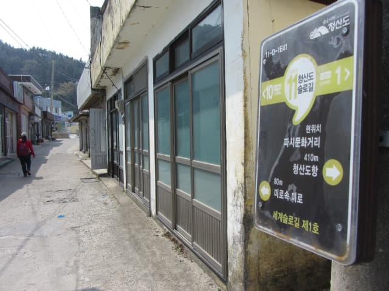
接著也走上左邊的小路看看, 道路彎彎曲曲的, 很難看清楚前路。恐怕又在村中迷路, 走一小段算了, 也總算走了。
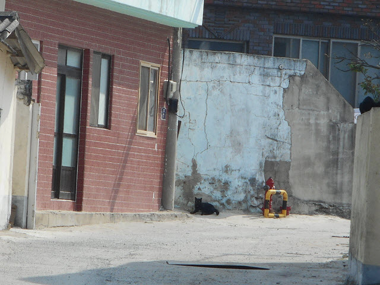
返回古街, 繼續向前走, 又經過另一條通往清里村的小路, 道路兩旁的彩色壁畫很漂亮。
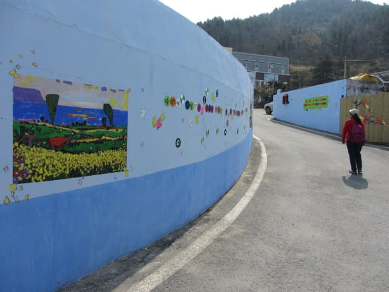
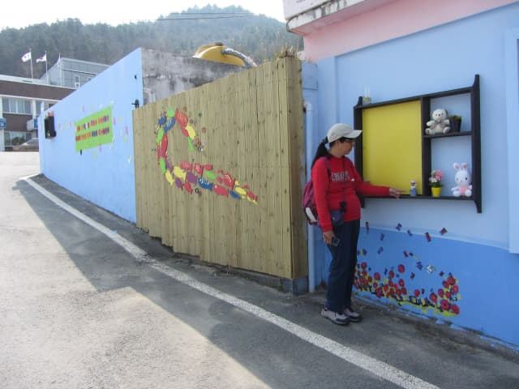
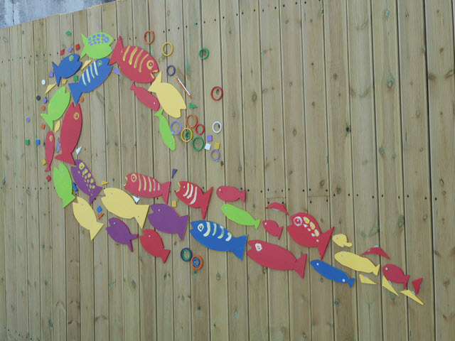
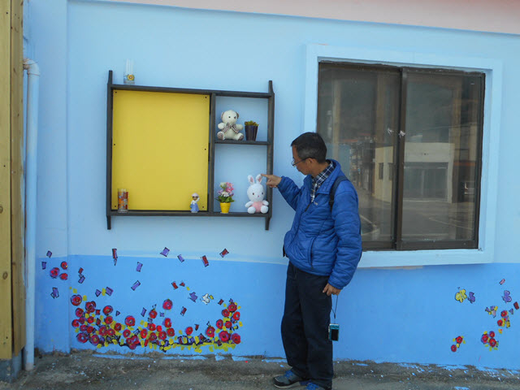
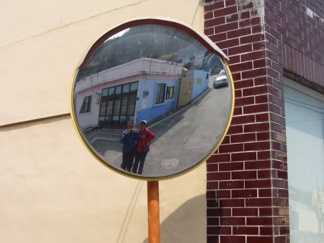
青山島港
穿出小巷, 迎面便是我們熟悉的青山島港。算一算, 這裡已經走過四次了, 那會不熟悉。
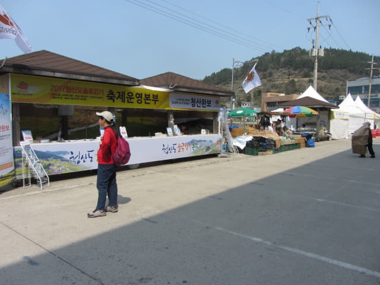
又是她表演的時間。
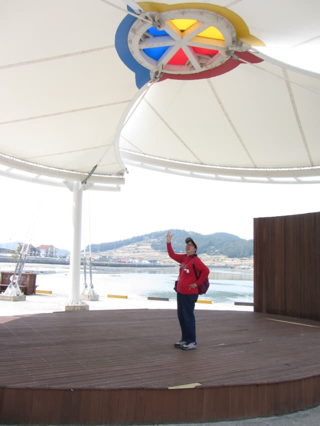
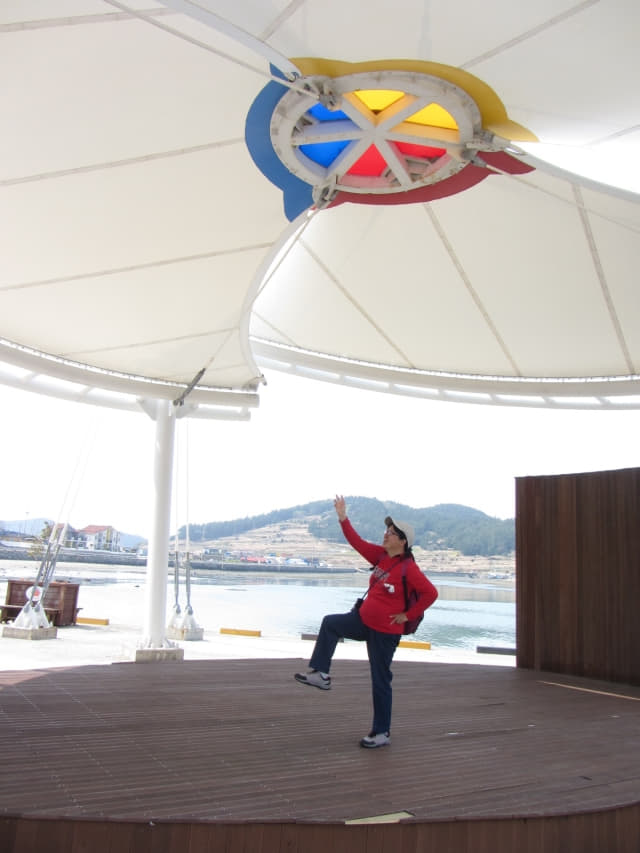